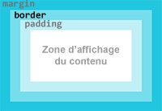
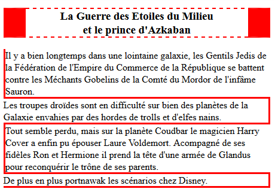

bordures
Toutes les boîtes, qu'elle que soit leur type, peuvent avoir
une bordure.
Les bordures sont faites avec 3 composants :
Le raccourci border
permet de définir en une seule fois épaisseur, style et couleur, de
façon identique pour les quatres bords.
Si on veut définir un bord uniquement sur un côté on peut utiliser
les raccourcis border-top ,
border-right ,
border-bottom
et border-left
Fichier CSS : styles.css
h3 {
border-bottom: 0.3em dotted red;
border-top: 0.3em dotted red;
}
.p1 {
border-left: 20px solid cyan;
}
div p {
border-left: 5px solid gold;
border-bottom: 5px solid gold;
}
img {
vertical-align: bottom;
}
Si la couleur des bords n'est pas précisée, ils prendront la couleur
de la police de caractère (color ).
L'unité de taille pour définir l'épaisseur est à choisir en fonction
du dispositif d'affichage. Par exemple il ne faut pas utiliser des
centimètres pour afficher sur un écran pour lequel on privilégiera
le pixel CSS (px), le cadratin (em) ou la référence à la racine du document
(rem).
ne peut pas être le
pourcentage (%).
Bordures individualisées
Complétez le code CSS
pour obtenir le résultat suivant :

bordures à réaliser
Code
à compléter
Exercice : bordures individualisées
<!DOCTYPE html>
<html lang="fr">
<head>
<meta charset="UTF-8">
<title>Les CSS</title>
<link href="styles.css" rel="stylesheet">
</head>
<body>
<h3>La Guerre des Etoiles du Milieu<br>et le prince d'Azkaban</h3>
<p>Il y a bien longtemps dans une lointaine galaxie, les Gentils Jedis de la Fédération de l'Empire du Commerce de la République se battent contre les Méchants Gobelins de la Comté du Mordor de l'infâme Sauron. </p>
<p>Les troupes droïdes sont en difficulté sur bien des planètes de la Galaxie envahies par des hordes de trolls et d'elfes nains.</p>
<p>Tout semble perdu, mais sur la planète Coudbar le magicien Harry Cover a enfin pu épouser Laure Voldemort. Acompagné de ses fidèles Ron et Hermione il prend la tête d'une armée de Glandus pour reconquérir le trône de ses parents.</p>
<p>De plus en plus portnawak les scénarios chez Disney.</p>
</body>
</html>
Fichier CSS : styles.css
/* CODE CSS A COMPLETER
la couleur est red
la taille autour du h3 est de 2 pixels
la taille autour des paragraphes est de 3 pixels */
Une
solution possible
Exercice : bordures individualisées
<!DOCTYPE html>
<html lang="fr">
<head>
<meta charset="UTF-8">
<title>Les CSS</title>
<link href="styles.css" rel="stylesheet">
</head>
<body>
<h3>La Guerre des Etoiles du Milieu<br>et le prince d'Azkaban</h3>
<p>Il y a bien longtemps dans une lointaine galaxie, les Gentils Jedis de la Fédération de l'Empire du Commerce de la République se battent contre les Méchants Gobelins de la Comté du Mordor de l'infâme Sauron. </p>
<p>Les troupes droïdes sont en difficulté sur bien des planètes de la Galaxie envahies par des hordes de trolls et d'elfes nains.</p>
<p>Tout semble perdu, mais sur la planète Coudbar le magicien Harry Cover a enfin pu épouser Laure Voldemort. Acompagné de ses fidèles Ron et Hermione il prend la tête d'une armée de Glandus pour reconquérir le trône de ses parents.</p>
<p>De plus en plus portnawak les scénarios chez Disney.</p>
</body>
</html>
Fichier CSS : styles.css
h3 {
border-top: 2px dashed red;
border-right: 2em solid red;
border-left: 2em solid red;
border-bottom: 2px dashed red;
text-align: center;
}
p {
margin: 0; /* pour que les bordures se touchent */
}
p:first-of-type {
border-left: 3px solid red;
}
p:nth-of-type(2) {
border-top: 3px solid red;
border-right: 3px solid red;
}
p:nth-of-type(3) {
border-top: 3px solid red;
border-left: 3px solid red;
}
p:last-of-type {
border-top: 3px solid red;
border-right: 3px solid red;
border-bottom: 3px solid red;
}